תמונה אחת,
וסוף סוף אתם יודעים
מה הצמח הזה
מצלמים את הצמח, מקבלים זיהוי והנחיות טיפול מותאמות!
יאללה, בואו נתחיל!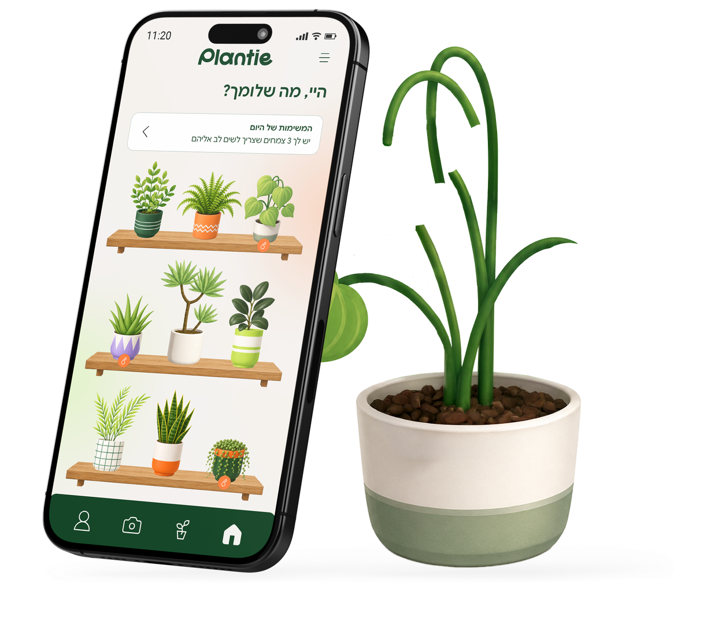
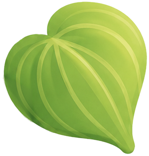
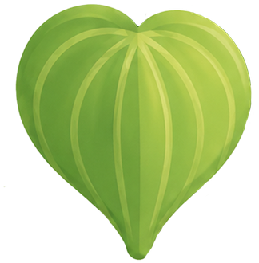
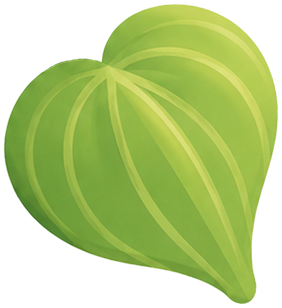
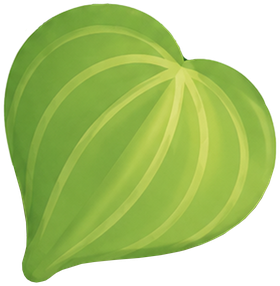
מותאם בדיוק בשבילכם
המלצות שמותאמות לצמח ולסביבה שלכם
מזהים ומטפלים
זיהוי, הנחיות טיפול ואבחון בעיות
לא עוד חיפוש חד פעמי
כל המידע נשמר אצלכם במקום אחד
הצמח גר איתכם. אתם לא באמת מכירים אותו.
“יש צמח ירוק גדול בסלון, עומד שם כבר שנתיים,
ואני חי איתו וממש לא יודע איך קוראים לו” מתוך ראיונות משתמשים שקדמו למוצר
מי שמגדל צמח בבית, לרוב לא באמת יודע איך לטפל נכון בצמח כשקורה משהו.
plantie הוא הפיתרון לזה.
הכל מתחיל מצילום אחד
בכמה צעדים פשוטים, אתם מקבלים את כל המידע שהצמח שלכם צריך
מזהים
מצלמים את הצמח, או בוחרים תמונה קיימת מהגלריה
מטפלים
מוצאים מידע והנחיות מותאמות
מאבחנים
עלים חומים? נופלים? בוחרים תסמין ומקבלים כיוון פעולה
כרטיסיית צמח אחת, וכל מה שצריך לדעת עליו
אחרי הזיהוי, כל צמח מקבל כרטיסייה משלו. זה המסך שאליו חוזרים כשצריך להבין מה לעשות.
- שם הצמח בעברית ובלטינית
- מידע מהיר: כמה מים, כמה אור, ובאיזו טמפרטורה
- רמת קושי ברורה, מ"למתחילים" ועד "דורש השקעה"
- אבחון בעיה: בוחרים את מה שרואים ומקבלים הסבר וכיוון פעולה
- מעקב שקט: כל כניסה לכרטיסייה מסמנת שבדקתם את הצמח
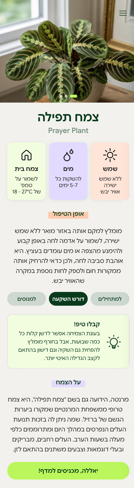
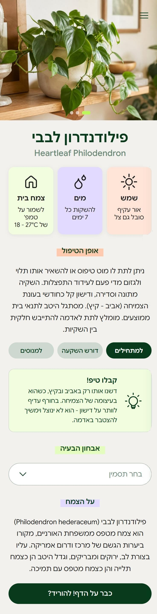
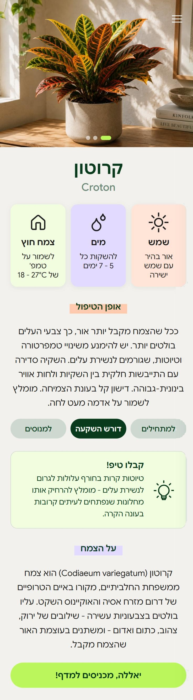
כרטיסיות צמח מתוך האפליקציה
למי זה מתאים?
לכל מי שיש לו צמח בבית ושאלה עליו
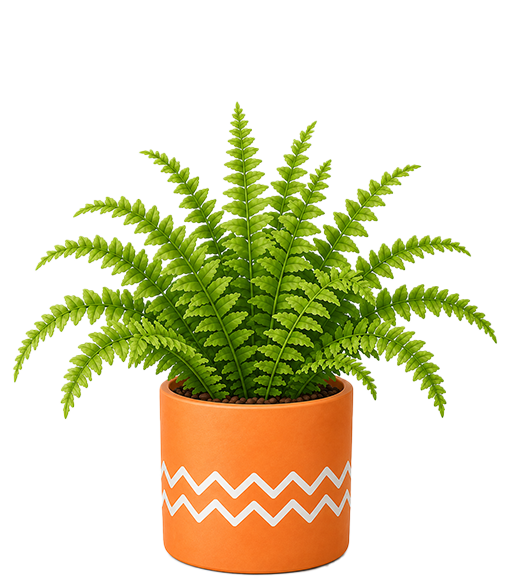
קיבלתם צמח, ולא בחרתם אותו
הוא הגיע עם השותפה, מההורים או במתנה. אתם מטפלים בו, אבל לא יודעים מה הוא. צילום אחד נותן לו שם, ומשם אפשר להתחיל.
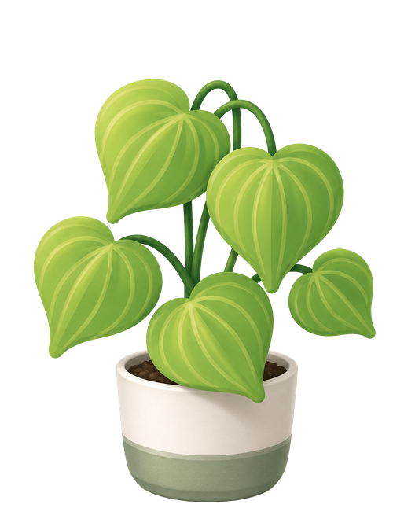
נטשתם תזכורות ואפליקציות בעבר
אין כאן לוח לנהל. כשנכנסים לכרטיסיית הצמח, הוא מסומן אוטומטית כנבדק.
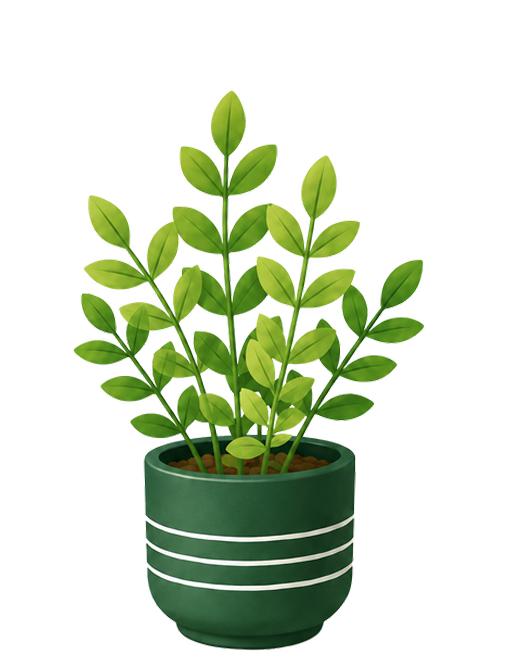
עברתם דירה והבית התמלא בצמחים
כל הצמחים על מדף אחד, ותמיד רואים מי צריך תשומת לב היום.
שאלות
איך הזיהוי בפועל עובד?
מצלמים את הצמח, או בוחרים תמונה קיימת מהגלריה, והאפליקציה מזהה אותו ומציגה הנחיות טיפול מותאמות במיוחד אליו.
מה קורה אם משהו לא בסדר עם הצמח (למשל עלים חומים)?
בכרטיסיית הצמח יש רשימת תסמינים לבחירה - בוחרים את מה שרואים, ומקבלים הסבר וכיוון פעולה מותאם.
על אילו סוגי צמחים האפליקציה עובדת?
על מגוון רחב של צמחי בית וצמחי חוץ נפוצים, כל אחד עם הנחיות טיפול משלו.
אני צריך לזכור להשקות או לעדכן משהו בעצמי?
לא. המעקב פסיבי - כשמבקרים בכרטיסיית הצמח הוא מתעדכן אוטומטית, בלי תזכורות או לוח נפרד לנהל.
אפשר לחפש צמח לפי שם, בלי לצלם?
בגרסה הזו הדרך המרכזית היא זיהוי מצילום - זו הדרך שהכי טבעית למשתמשים, לפי המחקר שקדם לבניית האפליקציה.
מוכנים להכיר את הצמח שלכם?
הורידו את האפליקציה שתתחילו לטפל נכון בצמחים שלכם כבר היום!
יאללה, בואו נתחיל!